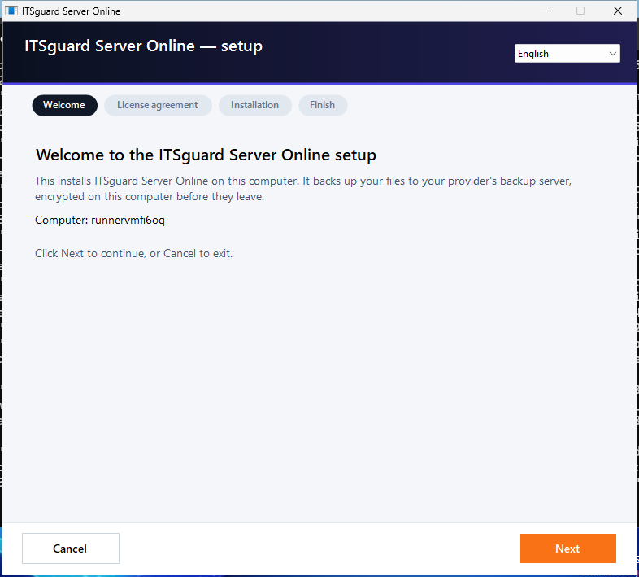
window only


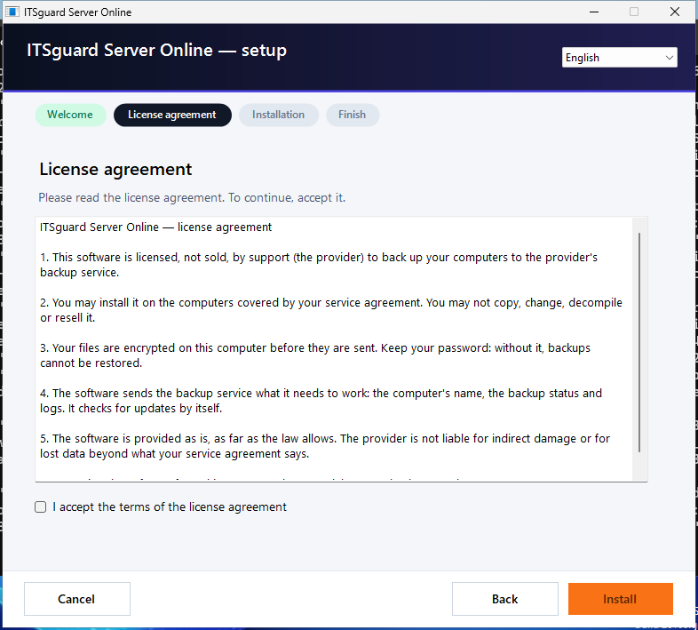
window only


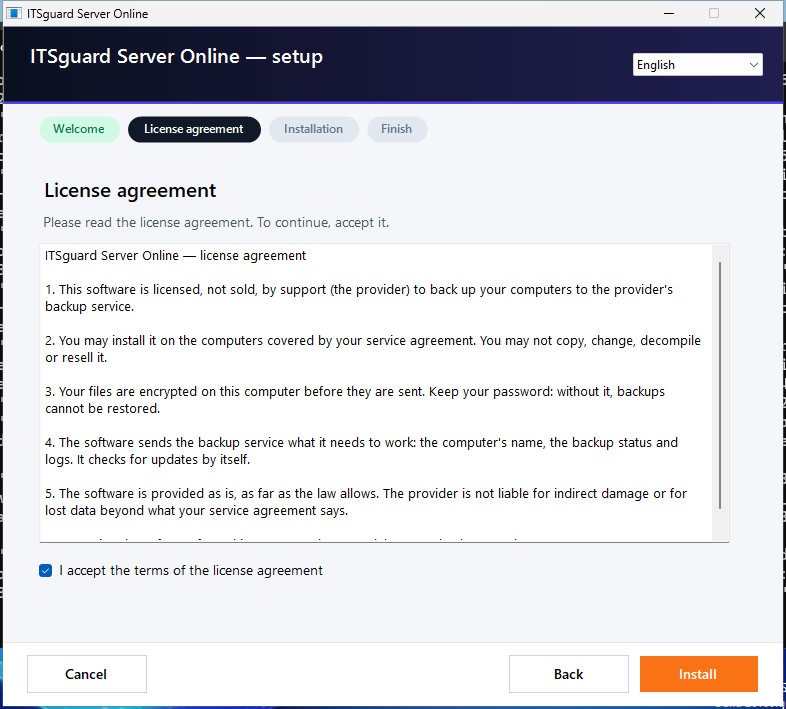
window only


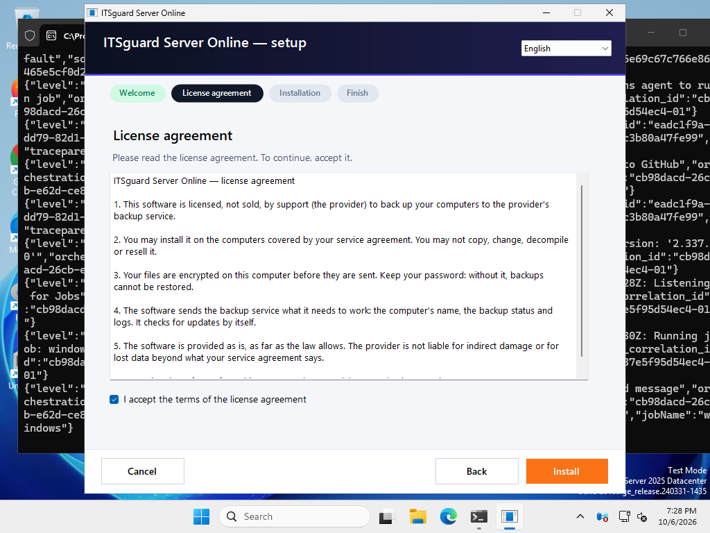
window only

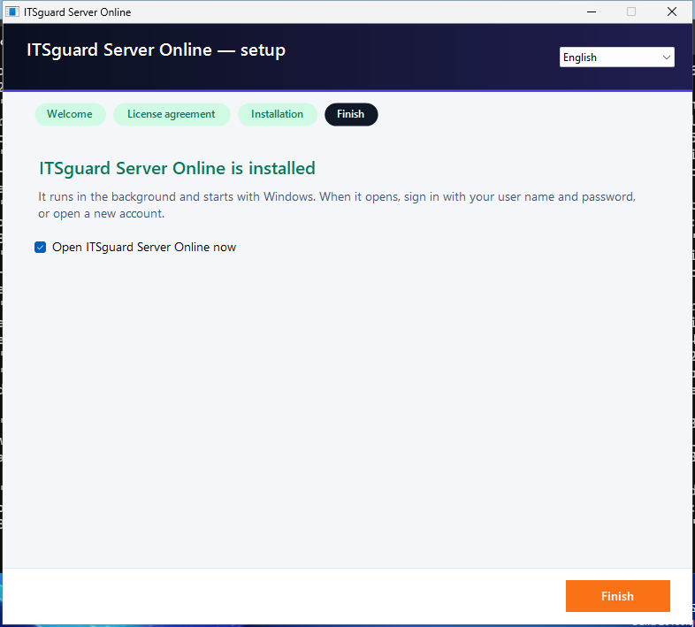
window only


window only


window only
phase: main | windows: Microsoft Windows Server 2025 Datacenter 10.0.26100 build 26100 | computer: runnervmfi6oq | package: OnlineBackup-Server-0.1.12.zip | commit: 2014d2b7d8f96707169ba8f0f8b0e34b551a7705 | run: 37518574168 | started: 2026-10-06T19:27:57.7782640+00:00 | resolution: 1024x768 | dpi: 100 | powershell: 5.1.26100.33438 | interactive: True | user: runnervmfi6oq\runneradmin
FUNCTIONAL: the action worked, proven from outside the product (Windows, the server, SHA-256). VISUAL: no visual finding of severity Medium or High on its screens. UX: every written flow check passed. A screenshot never proves a backup: only the SHA-256 comparison does.
| Journey | FUNCTIONAL | VISUAL | UX | Why not PASS |
|---|---|---|---|---|
| W01 Server: install from the real package (Windows service) and sign in | PASS | NOT TESTED | NOT TESTED | |
| W02 Installer failure: a damaged Setup.exe installs nothing and says so | PASS | PASS | PASS | |
| W03 Client installation through the installer window, proven by Windows | FAIL | FAIL | FAIL | Finish with "Open now" opens the program window: no window in 60 s |
| W04 First run: sign in through the window, the agent connects to the server | FAIL | NOT TESTED | FAIL | Client 01 - First run: the sign-in page: || the journey stopped: You cannot call a method on a null-valued expression. @ line 265 |
| W05 FULL CHAIN: backup set in the window -> Back up now -> delete the source -> Restore in the window -> SHA-256 | FAIL | NOT TESTED | NOT TESTED | the journey stopped: You cannot call a method on a null-valued expression. @ line 265 |
| W06 Service restart: Windows restarts the backup service, then backup and restore again | FAIL | NOT TESTED | NOT TESTED | the journey stopped: You cannot call a method on a null-valued expression. @ line 265 |
| W07 Agent crash mid-backup: the process is killed; Windows brings it back; no ghost run; the next backup restores identical | FAIL | NOT TESTED | NOT TESTED | the journey stopped: You cannot call a method on a null-valued expression. @ line 265 |
| W08 Service stopped mid-backup: the run ends cleanly; start; backup and restore identical | FAIL | NOT TESTED | NOT TESTED | the journey stopped: You cannot call a method on a null-valued expression. @ line 265 |
| W09 Server crash mid-backup: the server process is killed; Windows restarts it; the next backup restores identical | FAIL | NOT TESTED | NOT TESTED | the journey stopped: You cannot call a method on a null-valued expression. @ line 265 |
| W10 VSS: a file locked by another program is backed up through the shadow copy; no shadow copy is left behind | FAIL | NOT TESTED | NOT TESTED | the journey stopped: You cannot call a method on a null-valued expression. @ line 265 |
| W11 VSS failure: the shadow copy service is disabled; the locked file is reported, never a silent success; recovery | FAIL | NOT TESTED | NOT TESTED | the journey stopped: You cannot call a method on a null-valued expression. @ line 265 |
| W12 Permission denied: a folder the service may not read is an error, not a deletion; recovery | FAIL | NOT TESTED | NOT TESTED | the journey stopped: You cannot call a method on a null-valued expression. @ line 265 |
| W13 Service that does not start: its program file is missing (as after an antivirus quarantine); Repair in the installer window brings it back | FAIL | NOT TESTED | NOT TESTED | the journey stopped: Cannot bind argument to parameter 'Path' because it is null. @ line 342 |
| W14 Update of the agent: interrupted update rolls back; then Update in the window; backup and restore after | FAIL | NOT TESTED | NOT TESTED | the journey stopped: Cannot bind argument to parameter 'Path' because it is null. @ line 357 |
| W15 Uninstall through the installer window, reinstall, sign in again, backup and restore | FAIL | FAIL | FAIL | Removal asks for confirmation: no question || Maintenance - remove finished: ITSguard Server Online | Yes | No | Remove ITSguard Server Online from this computer? | ITSguard Server Online is already installed on this computer | Installed version: 0.1.12 | What would you like to do? | Repair — Install it again over the present one — the backups and settings are kept | Remove — Remove ITSguard Server Online from this computer | Also remove this computer's settings (the backups on the server are kept) | Your backups stay on the server. To restore them later, install again and sign in with |
| W16 Visual tour: every screen in English and Hebrew at 1920x1080, 1366x768 and 1024x768 | FAIL | FAIL | NOT TESTED | Tour: the program window opens (en, 1024x768): pid 1548 window 'Backup' handle 328632 responding True || Tour: the program window opens (he, 1024x768): pid 5996 window 'Backup' handle 263426 responding True |
| W17 System State backup (Windows Server Backup) | FAIL | NOT TESTED | NOT TESTED | the journey stopped: You cannot call a method on a null-valued expression. @ line 265 |
| W18 Reboot | NOT TESTED | NOT TESTED | NOT TESTED | a GitHub-hosted runner cannot restart (the job ends with the machine). The real reboot runs in the virtual-machine job (phase before-reboot / after-reboot). |
| Step | Result | Expected | Actual (what the oracle saw) | Screen |
|---|---|---|---|---|
| install-server.ps1 in Windows PowerShell (as the README says) | PASS | exit 0, service OnlineBackupServer Running | exit 0; Running | |
| The server service starts again with the licence | PASS | Running | Running | |
| Server service: automatic start, restarts after a failure | PASS | StartMode Auto, failure actions = restart | Auto; RESET_PERIOD (in seconds) : 86400 FAILURE_ACTIONS : RESTART -- Delay = 60000 milliseconds. RESTART -- Delay = 60000 milliseconds. RESTART -- Delay = 300000 milliseconds. | |
| Admin sign-in over HTTPS (password + authenticator) | PASS | a session | HTTP 200 | |
| A customer account for this computer | PASS | user qa-win | 1 users | |
| Download the client Setup.exe from the server (what the IT company hands out) | PASS | a signed-size program | HTTP 200, 13891616 bytes |
Evidence: windows-state.json · event-log.txt · service-events.txt · install-server.txt · server-logs
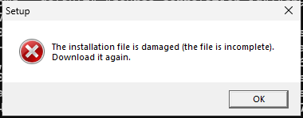
| Step | Result | Expected | Actual (what the oracle saw) | Screen |
|---|---|---|---|---|
| The damaged file says it is damaged | PASS | a message: damaged, download again | The installation file is damaged (the file is incomplete). Download it again. OK | The installation file is damaged (the file is incomplete). Download it again. | 01-The-damaged-file-says-it-is-damaged.png |
| Nothing was installed (Windows service manager, installed programs) | PASS | no service, no entry | service: False; entries: 0 | |
| UX: Installer: a damaged download tells the customer what to do | PASS | download it again | The installation file is damaged (the file is incomplete). Download it again. OK | The installation file is damaged (the file is incomplete). Download it again. |
Evidence: windows-state.json · event-log.txt · service-events.txt · server-logs





| Step | Result | Expected | Actual (what the oracle saw) | Screen |
|---|---|---|---|---|
| Setup.exe opens its window | PASS | the setup window within 120 s | ITSguard Server Online | |
| Installer 01 - Welcome | PASS | Welcome, the product, Next and Cancel | Welcome to the ITSguard Server Online setup | This installs ITSguard Server Online on this computer. It backs up your files to your provider's backup server, encrypted on this computer before they leave. | Computer: runnervmfi6oq | Click Next to continue, or Cancel to exit. | English | Next | Cancel | 01-Installer-01---Welcome.png |
| Installer 02 - License agreement | PASS | the license text and an accept box | License agreement | Please read the license agreement. To continue, accept it. | ITSguard Server Online — license agreement 1. This software is licensed, not sold, by support (the provider) to back up your computers to the provider's backup service. 2. You may install it on the computers covered by your service agreement. You may not copy, change, decompile or resell it. 3. Your files are encrypted on this computer before they are sent. Keep your password: without it, backups cannot be restored. 4. The software sends the backup service what it needs to work: the computer's name, the backup status and logs. It checks for updates by itself. 5. The software is provided as is, as far as the law allows. The provider is not liable for indirect damage or for lost data beyond what your service agreement says. 6. Removing the software from this computer does not delete your backups on the server. | I accept the terms of the license agreement | English | Back | Install | Cancel | 02-Installer-02---License-agreement.png |
| Install is disabled before the license is accepted | PASS | not enabled | enabled=False | |
| Back returns to Welcome, Next comes back | PASS | Welcome, then the license again | Welcome to the ITSguard Server Online setup | This installs ITSguard Server Online on this computer. It backs up your files to your provider's backup server, encrypted on this computer before they leave. | Computer: runnervmfi6oq | Click Next to continue, or Cancel to exit. | English | Next | Cancel | |
| Accept the license (tick the box) | PASS | ticked, Install enabled | ticked= install enabled=True | |
| Installer pages that exist | info | Welcome -> License agreement -> Installation (progress) -> Finish. There is no configuration page (folder, options) and no "Ready to install" page in the current installer. | ||
| Installer 04 - Installing (progress) | PASS | an "Installing" page with a progress bar | ITSguard Server Online is installed | It runs in the background and starts with Windows. When it opens, sign in with your user name and password, or open a new account. | Open ITSguard Server Online now | English | Finish | 05-Installer-04---Installing--progress-.png |
| Installer 05 - Finish | PASS | the Finish page says it is installed | ITSguard Server Online is installed | It runs in the background and starts with Windows. When it opens, sign in with your user name and password, or open a new account. | Open ITSguard Server Online now | English | Finish | 06-Installer-05---Finish.png |
| The setup window closes after Finish | PASS | no setup window | 0 window(s) left | |
| Windows service manager: the backup service exists, starts automatically and is Running | PASS | OnlineBackupAgent Running, Auto | Running Auto as LocalSystem | |
| Its process runs from the installed program | PASS | the service PID is OnlineBackup.Agent.exe in the install folder | pid 3108 C:\Program Files\ITSguard Server Online\OnlineBackup.Agent.exe | |
| Installed programs list (Apps / Programs and Features) | PASS | one entry with a name, version and an uninstall command | ITSguard Server Online 0.1.12 [ITSguard Server Online] C:\Program Files\ITSguard Server Online | |
| The program files on disk | PASS | Agent, Client, Core, BouncyCastle, restic in the install folder | C:\Program Files\ITSguard Server Online; missing: | |
| The settings folder (ProgramData) belongs to SYSTEM and Administrators only | PASS | no Users / Everyone access | NT AUTHORITY\SYSTEM:FullControl; BUILTIN\Administrators:FullControl | |
| Start menu shortcut and start with Windows | PASS | a shortcut to the program, and one with --tray in Startup | C:\Users\Public\Desktop\ITSguard Server Online.lnk ; C:\ProgramData\Microsoft\Windows\Start Menu\Programs\ITSguard Server Online.lnk ; C:\ProgramData\Microsoft\Windows\Start Menu\Programs\Startup\ITSguard Server Online.lnk --tray; C:\ProgramData\Microsoft\Windows\Start Menu\Programs\Startup\ITSguard Server Online.lnk --tray | |
| Finish with "Open now" opens the program window | FAIL | the program window | no window in 60 s | 07-Finish-with--Open-now--opens-the-program-window.png |
| UX: Installer: the first page says what will be installed | PASS | the product name and what it does | Welcome to the ITSguard Server Online setup | This installs ITSguard Server Online on this computer. It backs up your files to your provider's backup server, encrypted on this computer before they leave. | Computer: runnervmfi6oq | Click Next to continue, or Cancel to exit. | English | Next | Cancel | |
| UX: Installer: a license agreement must be accepted before installing | PASS | Install disabled until accepted | enabled=False | |
| UX: Installer: a "Ready to install" summary before installing | FAIL | a page listing what will be installed and where | the license page's button installs at once (no configuration or ready page) | |
| UX: Installer: progress is visible while installing | PASS | a progress bar and what is being done | see the screenshot | |
| UX: Installer: the last page says the result and what to do next | PASS | installed + how to sign in | ITSguard Server Online is installed | It runs in the background and starts with Windows. When it opens, sign in with your user name and password, or open a new account. | Open ITSguard Server Online now | English | Finish |
Evidence: windows-state.json · event-log.txt · service-events.txt · server-logs


| Step | Result | Expected | Actual (what the oracle saw) | Screen |
|---|---|---|---|---|
| The program window | info | not found; processes: pid 2632 window 'ITSguard Server Online' handle 262448 responding True; pid 7992 window 'ITSguard Server Online' handle 328030 responding True | ||
| Client 01 - First run: the sign-in page | FAIL | Sign in, the server, user name and password | 01-Client-01---First-run--the-sign-in-page.png | |
| the journey stopped | FAIL | no error | You cannot call a method on a null-valued expression. @ line 265 | 03-stopped.png |
| UX: Client: the first screen asks only for what the customer received | FAIL | server (pre-filled), user name, password |
Evidence: windows-state.json · event-log.txt · service-events.txt · server-logs
| Step | Result | Expected | Actual (what the oracle saw) | Screen |
|---|---|---|---|---|
| The golden dataset | info | 112 files: text, Hebrew and Japanese names, spaces, an empty file, 20 MB + 3 MB random, duplicates, 100 small files, a long path, read-only and hidden files | ||
| The program window | info | not found; processes: pid 2632 window 'ITSguard Server Online' handle 262448 responding True; pid 3648 window 'ITSguard Server Online' handle 66164 responding True; pid 7992 window 'ITSguard Server Online' handle 328030 responding True | ||
| the journey stopped | FAIL | no error | You cannot call a method on a null-valued expression. @ line 265 | 01-stopped.png |
Evidence: windows-state.json · event-log.txt · service-events.txt · server-logs · source.sha256
| Step | Result | Expected | Actual (what the oracle saw) | Screen |
|---|---|---|---|---|
| Restart the service (Windows service manager) | PASS | Running again | Running | |
| The program window | info | not found; processes: pid 2632 window 'ITSguard Server Online' handle 262448 responding True; pid 3548 window 'ITSguard Server Online' handle 66250 responding True; pid 3648 window 'ITSguard Server Online' handle 66164 responding True; pid 7992 window 'ITSguard Server Online' handle 328030 responding True | ||
| the journey stopped | FAIL | no error | You cannot call a method on a null-valued expression. @ line 265 | 01-stopped.png |
Evidence: windows-state.json · event-log.txt · service-events.txt · server-logs
| Step | Result | Expected | Actual (what the oracle saw) | Screen |
|---|---|---|---|---|
| The program window | info | not found; processes: pid 2632 window 'ITSguard Server Online' handle 262448 responding True; pid 3548 window 'ITSguard Server Online' handle 66250 responding True; pid 3648 window 'ITSguard Server Online' handle 66164 responding True; pid 5392 window 'ITSguard Server Online' handle 66336 responding True; pid 7992 window 'ITSguard Server Online' handle 328030 responding True | ||
| the journey stopped | FAIL | no error | You cannot call a method on a null-valued expression. @ line 265 | 01-stopped.png |
Evidence: windows-state.json · event-log.txt · service-events.txt · server-logs
| Step | Result | Expected | Actual (what the oracle saw) | Screen |
|---|---|---|---|---|
| The program window | info | not found; processes: pid 2632 window 'ITSguard Server Online' handle 262448 responding True; pid 3548 window 'ITSguard Server Online' handle 66250 responding True; pid 3648 window 'ITSguard Server Online' handle 66164 responding True; pid 5392 window 'ITSguard Server Online' handle 66336 responding True; pid 7992 window 'ITSguard Server Online' handle 328030 responding True; pid 9676 window 'ITSguard Server Online' handle 66422 responding True | ||
| the journey stopped | FAIL | no error | You cannot call a method on a null-valued expression. @ line 265 | 01-stopped.png |
Evidence: windows-state.json · event-log.txt · service-events.txt · server-logs
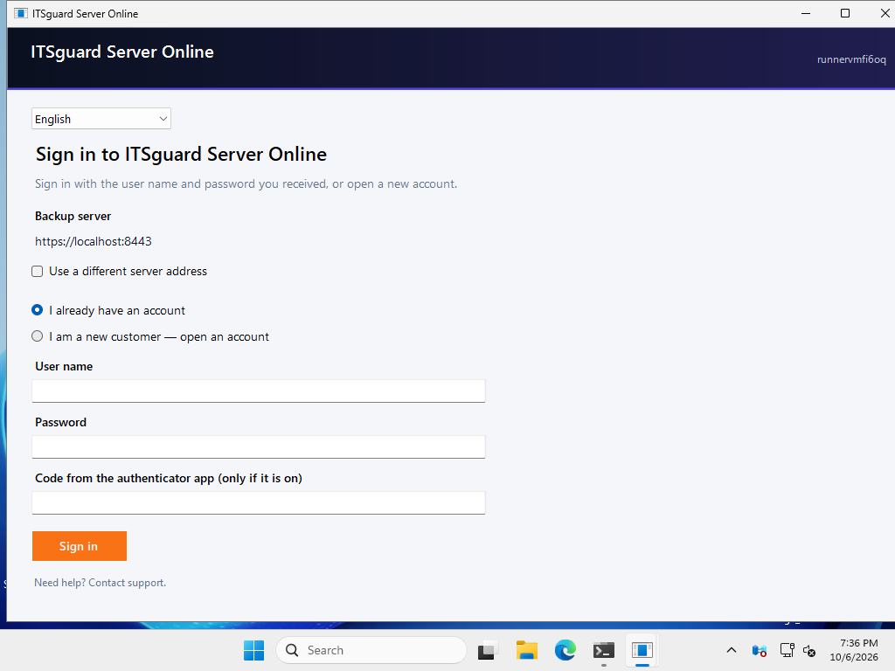
| Step | Result | Expected | Actual (what the oracle saw) | Screen |
|---|---|---|---|---|
| The program window | info | not found; processes: pid 2632 window 'ITSguard Server Online' handle 262448 responding True; pid 3548 window 'ITSguard Server Online' handle 66250 responding True; pid 3648 window 'ITSguard Server Online' handle 66164 responding True; pid 5392 window 'ITSguard Server Online' handle 66336 responding True; pid 7992 window 'ITSguard Server Online' handle 328030 responding True; pid 9336 window 'ITSguard Server Online' handle 66508 responding True; pid 9676 window 'ITSguard Server Online' handle 66422 responding True | ||
| the journey stopped | FAIL | no error | You cannot call a method on a null-valued expression. @ line 265 | 01-stopped.png |
Evidence: windows-state.json · event-log.txt · service-events.txt · server-logs
| Step | Result | Expected | Actual (what the oracle saw) | Screen |
|---|---|---|---|---|
| The file is really locked (another program cannot read it) | PASS | reading fails | Exception calling "ReadAllBytes" with "1" argument(s): "The process cannot access the file 'C:\OnlineBackup-QA\Data\Documents\locked.pst' because it is being used by another process." | |
| The program window | info | not found; processes: pid 1940 window 'ITSguard Server Online' handle 66600 responding True; pid 2632 window 'ITSguard Server Online' handle 262448 responding True; pid 3548 window 'ITSguard Server Online' handle 66250 responding True; pid 3648 window 'ITSguard Server Online' handle 66164 responding True; pid 5392 window 'ITSguard Server Online' handle 66336 responding True; pid 7992 window 'ITSguard Server Online' handle 328030 responding True; pid 9336 window 'ITSguard Server Online' handle 66508 responding True; pid 9676 window 'ITSguard Server Online' handle 66422 responding True | ||
| the journey stopped | FAIL | no error | You cannot call a method on a null-valued expression. @ line 265 | 01-stopped.png |
Evidence: windows-state.json · event-log.txt · service-events.txt · server-logs
| Step | Result | Expected | Actual (what the oracle saw) | Screen |
|---|---|---|---|---|
| Disable the Volume Shadow Copy service | PASS | VSS disabled and stopped | Stopped Disabled | |
| The program window | info | not found; processes: pid 1940 window 'ITSguard Server Online' handle 66600 responding True; pid 2632 window 'ITSguard Server Online' handle 262448 responding True; pid 3548 window 'ITSguard Server Online' handle 66250 responding True; pid 3648 window 'ITSguard Server Online' handle 66164 responding True; pid 5392 window 'ITSguard Server Online' handle 66336 responding True; pid 6444 window 'ITSguard Server Online' handle 66686 responding True; pid 7992 window 'ITSguard Server Online' handle 328030 responding True; pid 9336 window 'ITSguard Server Online' handle 66508 responding True; pid 9676 window 'ITSguard Server Online' handle 66422 responding True | ||
| the journey stopped | FAIL | no error | You cannot call a method on a null-valued expression. @ line 265 | 01-stopped.png |
Evidence: windows-state.json · event-log.txt · service-events.txt · server-logs
| Step | Result | Expected | Actual (what the oracle saw) | Screen |
|---|---|---|---|---|
| Deny the service (SYSTEM) reading one folder | PASS | icacls deny | processed file: C:\OnlineBackup-QA\Data\Documents Successfully processed 1 files; Failed processing 0 files | |
| The program window | info | not found; processes: pid 1940 window 'ITSguard Server Online' handle 66600 responding True; pid 2632 window 'ITSguard Server Online' handle 262448 responding True; pid 3548 window 'ITSguard Server Online' handle 66250 responding True; pid 3648 window 'ITSguard Server Online' handle 66164 responding True; pid 5392 window 'ITSguard Server Online' handle 66336 responding True; pid 6444 window 'ITSguard Server Online' handle 66686 responding True; pid 7444 window 'ITSguard Server Online' handle 66766 responding True; pid 7992 window 'ITSguard Server Online' handle 328030 responding True; pid 9336 window 'ITSguard Server Online' handle 66508 responding True; pid 9676 window 'ITSguard Server Online' handle 66422 responding True | ||
| the journey stopped | FAIL | no error | You cannot call a method on a null-valued expression. @ line 265 | 01-stopped.png |
Evidence: windows-state.json · event-log.txt · service-events.txt · server-logs
| Step | Result | Expected | Actual (what the oracle saw) | Screen |
|---|---|---|---|---|
| the journey stopped | FAIL | no error | Cannot bind argument to parameter 'Path' because it is null. @ line 342 | 01-stopped.png |
Evidence: windows-state.json · event-log.txt · service-events.txt · server-logs
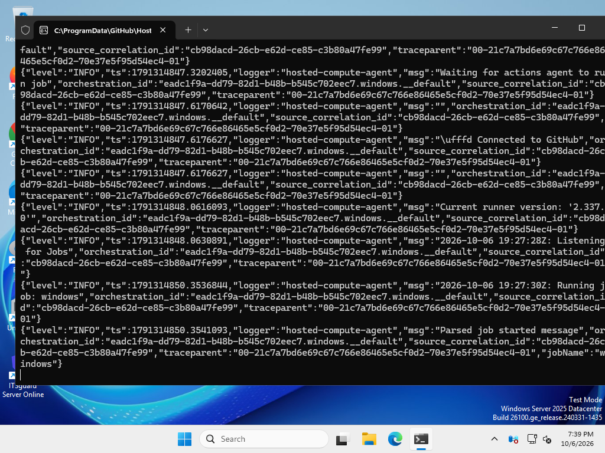
| Step | Result | Expected | Actual (what the oracle saw) | Screen |
|---|---|---|---|---|
| the journey stopped | FAIL | no error | Cannot bind argument to parameter 'Path' because it is null. @ line 357 | 01-stopped.png |
Evidence: windows-state.json · event-log.txt · service-events.txt · server-logs
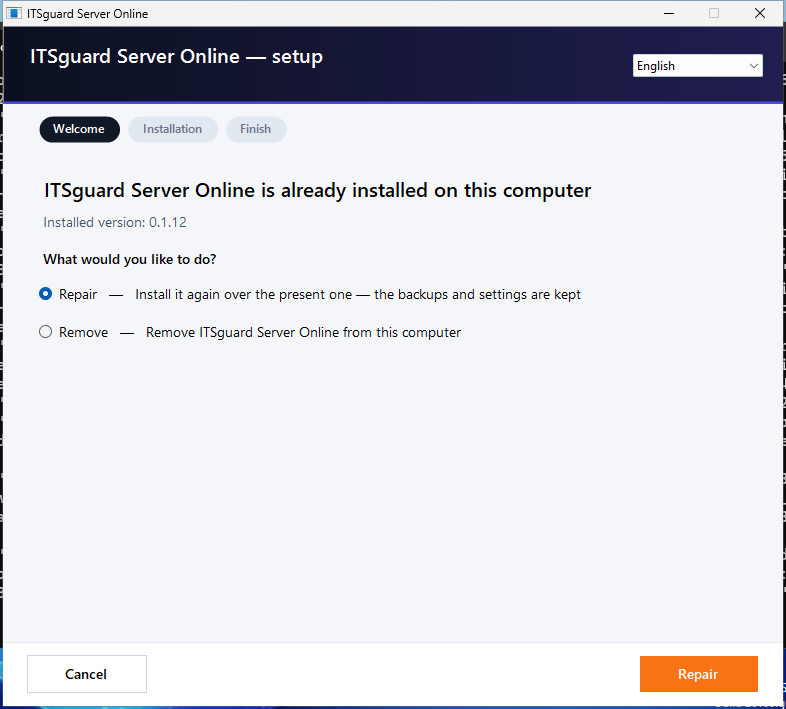
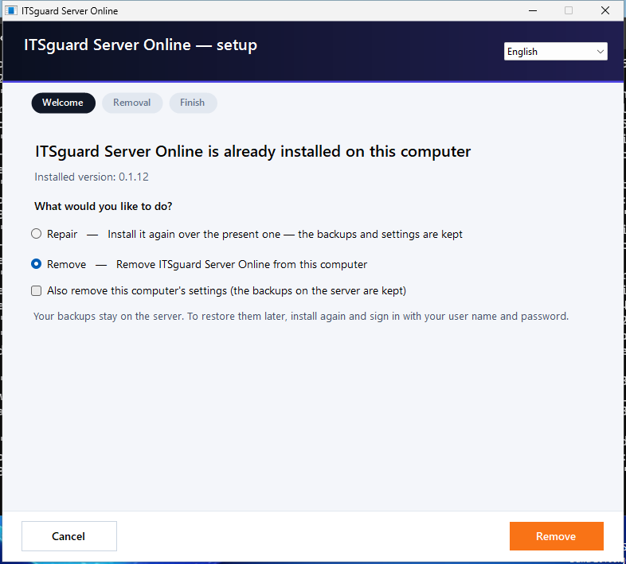
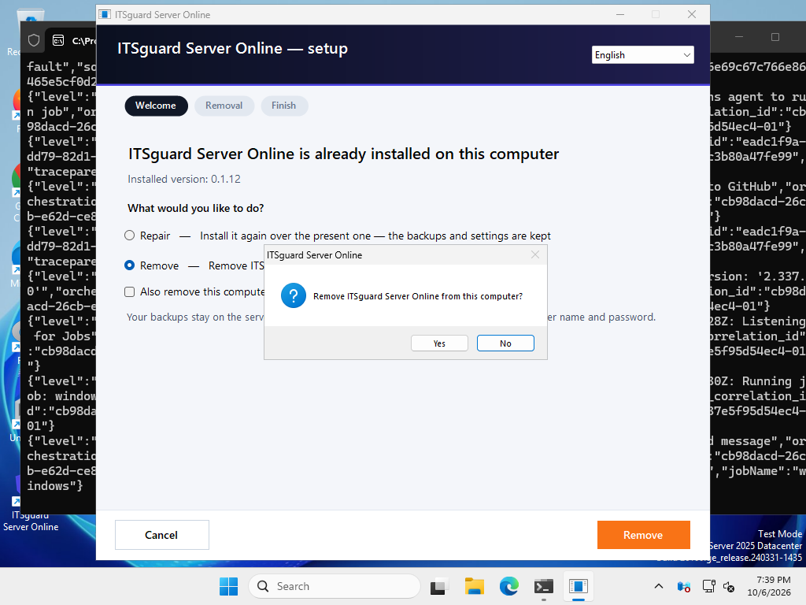
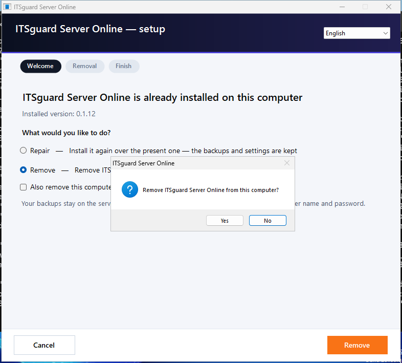


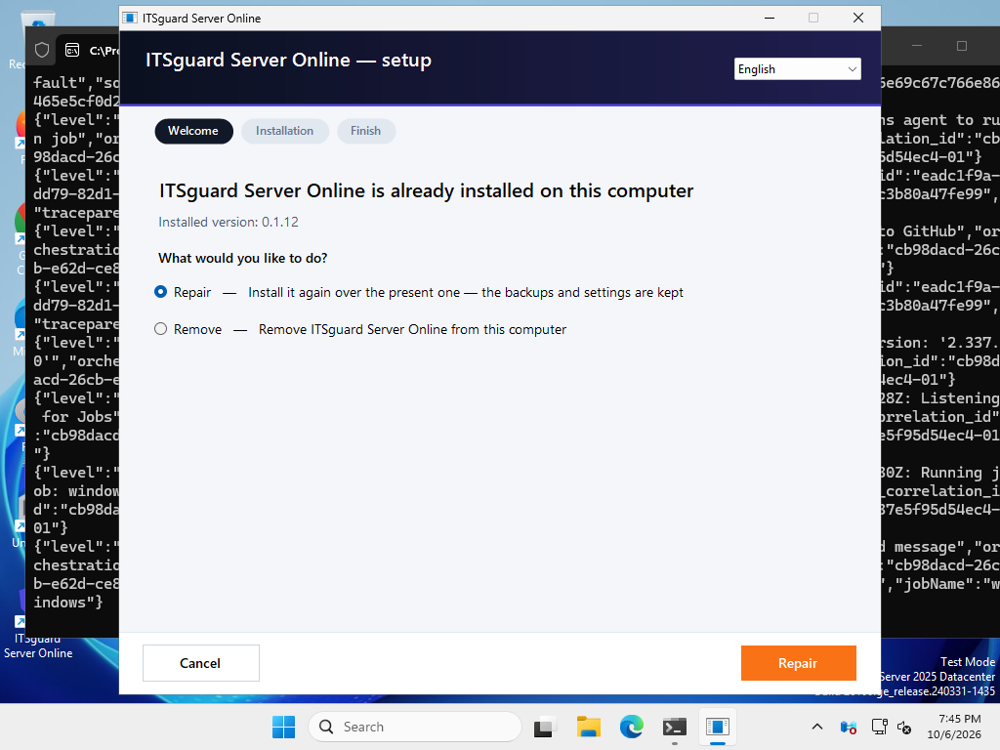

| Step | Result | Expected | Actual (what the oracle saw) | Screen |
|---|---|---|---|---|
| Maintenance - Setup sees the installation (remove) | PASS | "already installed" with the choices | ITSguard Server Online is already installed on this computer | Installed version: 0.1.12 | What would you like to do? | Repair — Install it again over the present one — the backups and settings are kept | Remove — Remove ITSguard Server Online from this computer | English | Repair | Cancel | 01-Maintenance---Setup-sees-the-installation--remove-.png |
| Choose remove | PASS | a 'remove' choice | Repair — Install it again over the present one — the backups and settings are kept / Remove — Remove ITSguard Server Online from this computer / Repair / Cancel | |
| Removal asks for confirmation | FAIL | a Yes / No question in front | no question | 03-Removal-asks-for-confirmation.png |
| Maintenance - remove finished | FAIL | the Finish page (*was removed*) | ITSguard Server Online | Yes | No | Remove ITSguard Server Online from this computer? | ITSguard Server Online is already installed on this computer | Installed version: 0.1.12 | What would you like to do? | Repair — Install it again over the present one — the backups and settings are kept | Remove — Remove ITSguard Server Online from this computer | Also remove this computer's settings (the backups on the server are kept) | Your backups stay on the server. To restore them later, install again and sign in with your user name and password. | English | Remove | Cancel | 05-Maintenance---remove-finished.png |
| Removed: no service, no entry in the installed programs, no program files | FAIL | all gone | ERROR: Cannot bind argument to parameter 'Path' because it is null. @ line 387 | |
| Removed: the backups are still on the server | FAIL | the set and its runs are on the server | 0 runs | |
| Setup.exe opens its window | PASS | the setup window within 120 s | ITSguard Server Online | |
| Installer 01 - Welcome | FAIL | Welcome, the product, Next and Cancel | ITSguard Server Online is already installed on this computer | Installed version: 0.1.12 | What would you like to do? | Repair — Install it again over the present one — the backups and settings are kept | Remove — Remove ITSguard Server Online from this computer | English | Repair | Cancel | 06-Installer-01---Welcome.png |
| the journey stopped | FAIL | no error | no button 'Next' (on screen: ITSguard Server Online is already installed on this computer | Installed version: 0.1.12 | What would you like to do? | Repair — Install it again over the present one — the backups and settings are kept | Remove — Remove ITSguard Server Online from this computer | English | Repair | Cancel) @ line 279 | 08-stopped.png |
| UX: Installer: the first page says what will be installed | FAIL | the product name and what it does | ITSguard Server Online is already installed on this computer | Installed version: 0.1.12 | What would you like to do? | Repair — Install it again over the present one — the backups and settings are kept | Remove — Remove ITSguard Server Online from this computer | English | Repair | Cancel |
Evidence: windows-state.json · event-log.txt · service-events.txt · server-logs
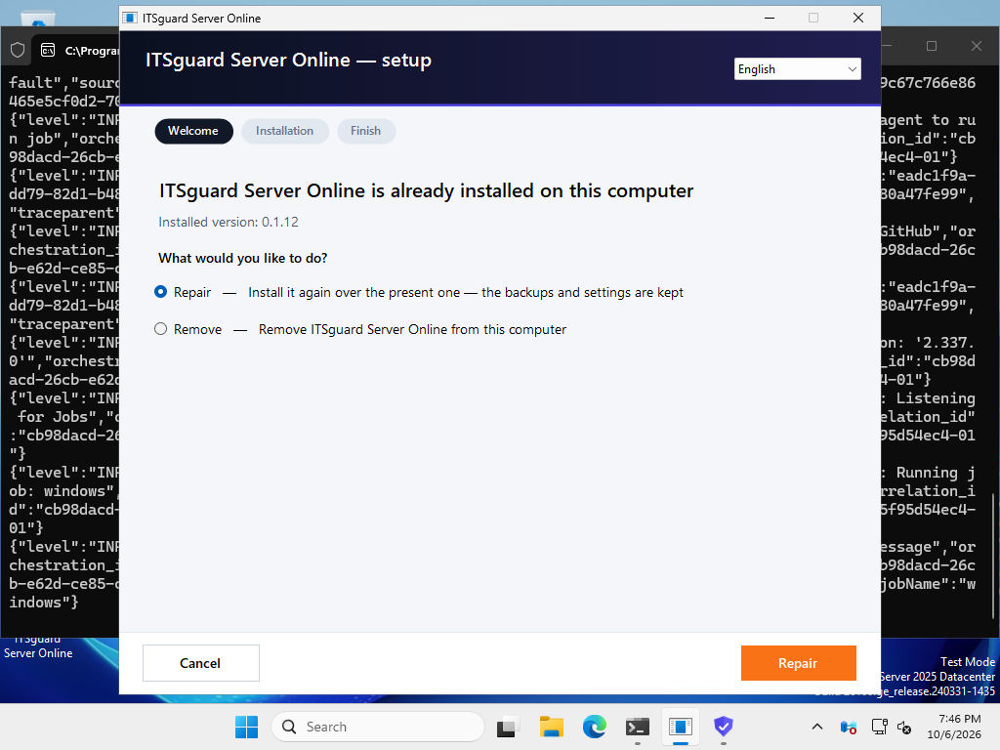
| Step | Result | Expected | Actual (what the oracle saw) | Screen |
|---|---|---|---|---|
| Resolution 1920x1080 | info | NOT TESTED: asked 1920x1080, the screen is 1024x768 | ||
| Resolution 1366x768 | info | NOT TESTED: asked 1366x768, the screen is 1024x768 | ||
| The program window | info | not found; processes: pid 1548 window 'Backup' handle 328632 responding True | ||
| Tour: the program window opens (en, 1024x768) | FAIL | the window | pid 1548 window 'Backup' handle 328632 responding True | |
| The program window | info | not found; processes: pid 5996 window 'Backup' handle 263426 responding True | ||
| Tour: the program window opens (he, 1024x768) | FAIL | the window | pid 5996 window 'Backup' handle 263426 responding True | |
| DPI | info | 125% and 150%: NOT TESTED in this job - the scale of a Windows session changes only after signing out, and a hosted runner cannot sign out; screen DPI here: 100% |
Evidence: windows-state.json · event-log.txt · service-events.txt · server-logs
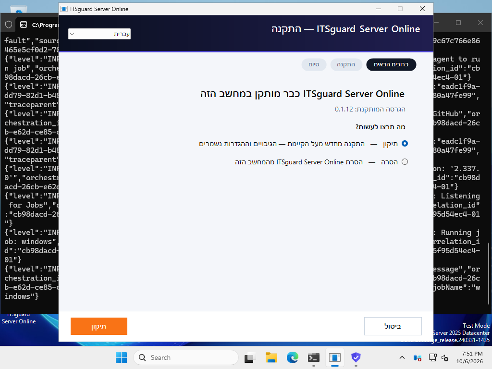
| Step | Result | Expected | Actual (what the oracle saw) | Screen |
|---|---|---|---|---|
| Windows Server Backup feature | PASS | installed | Success restart=No | |
| The program window | info | not found; processes: pid 3108 window 'Backup' handle 328568 responding True | ||
| the journey stopped | FAIL | no error | You cannot call a method on a null-valued expression. @ line 265 | 01-stopped.png |
Evidence: windows-state.json · event-log.txt · service-events.txt · server-logs
Evidence: windows-state.json · event-log.txt · service-events.txt · server-logs
Findings are for a person to judge with the screenshot. A change of the screens' flow needs the owner's approval first.